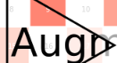

Crop: Subset image
Augmentor.Crop — Type.Crop <: Augmentor.ImageOperationDescription
Crops out the area denoted by the specified pixel ranges.
For example the operation Crop(5:100, 2:10) would denote a crop for the rectangle that starts at x=2 and y=5 in the top left corner and ends at x=10 and y=100 in the bottom right corner. As we can see the y-axis is specified first, because that is how the image is stored in an array. Thus the order of the provided indices ranges needs to reflect the order of the array dimensions.
Usage
Crop(indices)
Crop(indices...)Arguments
indices:NTupleorVarargofUnitRangethat denote the cropping range for each array dimension. This is very similar to how the indices forvieware specified.
See also
CropNative, CropSize, CropRatio, augment
Examples
julia> using Augmentor
julia> img = testpattern()
300×400 Array{RGBA{N0f8},2}:
[...]
julia> augment(img, Crop(1:30, 361:400)) # crop upper right corner
30×40 Array{RGBA{N0f8},2}:
[...]| Input | Crop(70:140, 25:155) |
|---|---|
 |  |